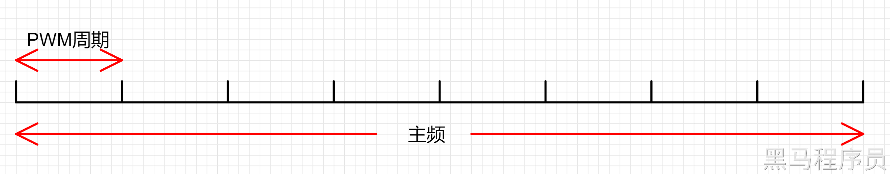
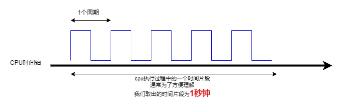
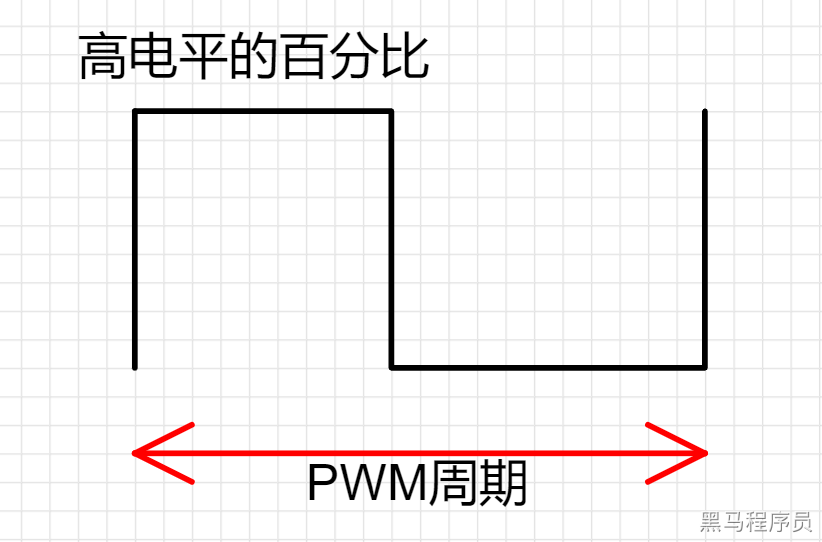

<!DOCTYPE lake>
<h3 data-lake-id="V4vUw" id="V4vUw"><span data-lake-id="u9298c1c9" id="u9298c1c9">PWM</span></h3><p data-lake-id="ufd8604fc" id="ufd8604fc"><span data-lake-id="ufb1024a6" id="ufb1024a6">PWM全称是脉宽调制（Pulse Width Modulation），是一种通过改变信号的脉冲宽度来控制电路输出的技术。PWM技术在工业自动化、电机控制、LED调光等领域广泛应用。</span></p><p data-lake-id="u7524de82" id="u7524de82"><span data-lake-id="u784e6f18" id="u784e6f18">PWM是一种将数字信号转换为模拟信号的技术，它通过改变信号的占空比来控制输出的电平。</span></p><p data-lake-id="u49a1d9ba" id="u49a1d9ba"><span data-lake-id="u45a98e62" id="u45a98e62">在ARM32系列芯片中，PWM输出的频率和占空比可以由程序控制，因此可以用来控制各种电机、灯光和其他设备的亮度、速度等参。</span></p><p data-lake-id="u8324b78d" id="u8324b78d"><span data-lake-id="u8623392c" id="u8623392c">在ARM32系列芯片中，PWM的调制是通过Timer来实现的。PWM与引脚相关，除了基本定时器以外，其他类型的Timer都可以作为PWM来进行使用。</span></p><h3 data-lake-id="SF5Zj" id="SF5Zj"><span data-lake-id="u735a1d28" id="u735a1d28">PWM配置详解</span></h3><h4 data-lake-id="m0YlD" id="m0YlD"><span data-lake-id="u5531d2c6" id="u5531d2c6">赫兹</span></h4><p data-lake-id="u924becdb" id="u924becdb"><span data-lake-id="u9446a584" id="u9446a584">赫兹是一个</span><span class="lake-fontsize-10" data-lake-id="u71b6474d" id="u71b6474d" style="color: rgb(51, 51, 51)">频率的单位</span><span data-lake-id="ubbbe4aca" id="ubbbe4aca">，也就是1s的时间内计数多少 ，例如：1hz就是1s计数1次.</span></p><h4 data-lake-id="XxFAe" id="XxFAe"><span data-lake-id="u45c713cd" id="u45c713cd">周期（单片机是没有时间概念的）</span></h4><p data-lake-id="ua5b02da9" id="ua5b02da9"><span data-lake-id="ub98e4434" id="ub98e4434">系统主频：1秒钟计数多少次。</span></p><p data-lake-id="u5ee0fc1f" id="u5ee0fc1f"><span data-lake-id="ua671108e" id="ua671108e">代码中的PWM周期(PWM Period)，指的是按N等份切分1秒钟，每个等份的计数值。</span></p><p data-lake-id="u968e8629" id="u968e8629"></p><p data-lake-id="u030c7589" id="u030c7589"><span data-lake-id="u4760964e" id="u4760964e">例如上图，我们按照8等份切分1秒钟的总计数值</span><code data-lake-id="u956943e5" id="u956943e5"><span data-lake-id="udecd795e" id="udecd795e">MAIN_Fosc</span></code><span data-lake-id="u36d674ab" id="u36d674ab">（主频），每个PWM周期的计数值为：</span></p><p data-lake-id="ufa619116" id="ufa619116"><code data-lake-id="u8b2f113d" id="u8b2f113d"><span data-lake-id="u3bdbb98b" id="u3bdbb98b">PWM_Period = MAIN_Fosc / 8 = 24M / 8 = 3M = 3 000 000</span></code><span data-lake-id="u871aec40" id="u871aec40"> 单位为次。</span></p><p data-lake-id="u03809357" id="u03809357"><span data-lake-id="u4feb4d62" id="u4feb4d62">即如果将这个</span><code data-lake-id="u05d84338" id="u05d84338"><span data-lake-id="u630cc573" id="u630cc573">3M</span></code><span data-lake-id="u46a48c29" id="u46a48c29">作为</span><code data-lake-id="u6d827939" id="u6d827939"><span data-lake-id="u00b3ad4e" id="u00b3ad4e">Period</span></code><span data-lake-id="u53033a45" id="u53033a45">参数，可以得到PWM方波每个周期的时长为：</span></p><p data-lake-id="uf831fe01" id="uf831fe01"><code data-lake-id="u8c01fe8e" id="u8c01fe8e"><span data-lake-id="u76c06dd6" id="u76c06dd6">1 / 8 = 0.125s</span></code></p><p data-lake-id="u07f409a8" id="u07f409a8"><span data-lake-id="udfb83cd4" id="udfb83cd4">pwm周期一个高点电平变化的时间</span></p><p data-lake-id="u75ff6f98" id="u75ff6f98"></p><h4 data-lake-id="NkWwe" id="NkWwe"><span data-lake-id="u9dc396d2" id="u9dc396d2">周期计数</span></h4><p data-lake-id="ub0273d49" id="ub0273d49"><span data-lake-id="u212140bd" id="u212140bd">因为单片机中是没有时间概念的，只有计数的概念，所以我们需要将计数值和时间进行联系。</span></p><p data-lake-id="u58da350d" id="u58da350d"><span data-lake-id="u65b6c367" id="u65b6c367">例子：</span></p><p data-lake-id="u66c9a54e" id="u66c9a54e"><code data-lake-id="u64115cb3" id="u64115cb3"><span data-lake-id="uc2e018da" id="uc2e018da">假设我们现在单片机的主频是168Mhz （也就是1s中我的单片机可以计数168000000次）也就是168000000/1s，这个时候我们想要timer变成100us执行一次，则1s/10000 = 100us，168000000/10000，也就是 16800/100us.这样当单片机计数到16800就是一个周期。</span></code></p><p data-lake-id="ue502d8cd" id="ue502d8cd"><span data-lake-id="u88078c60" id="u88078c60" style="color: #DF2A3F">注意：</span></p><p data-lake-id="u26a49032" id="u26a49032"><span data-lake-id="u6509aa30" id="u6509aa30" style="color: #DF2A3F">GD32的timer使用的寄存器是16位的寄存器 这里最大值是65535.</span></p><h4 data-lake-id="Df1IM" id="Df1IM"><span data-lake-id="u92f0b767" id="u92f0b767">分频系数（分频计数）</span></h4><p data-lake-id="u2e76c829" id="u2e76c829"><span data-lake-id="u3df0f403" id="u3df0f403">本来1s可以干完的事情现在进行延迟x倍才可以完成</span></p><p data-lake-id="ue189aa10" id="ue189aa10"><span data-lake-id="u39c0d1f9" id="u39c0d1f9">例子</span></p><p data-lake-id="uf3f31bd2" id="uf3f31bd2"><code data-lake-id="u117b39c4" id="u117b39c4"><span data-lake-id="u34e0e4a0" id="u34e0e4a0">1/1s， 1s可以计数1次，这个时候分频系数设置位2，则表示1s*2才可以计数1次，这样就变成了1/2s</span></code></p><p data-lake-id="u72edcd9e" id="u72edcd9e"><strong><span class="lake-fontsize-16" data-lake-id="ud806d228" id="ud806d228" style="color: #DF2A3F">注：</span></strong></p><p data-lake-id="ua4da0b0f" id="ua4da0b0f"><strong><span class="lake-fontsize-16" data-lake-id="ufcfaf14a" id="ufcfaf14a" style="color: #DF2A3F">这里分频系数一般和周期计数一起使用。</span></strong></p><h4 data-lake-id="GPVOV" id="GPVOV"><span data-lake-id="u5cb107ee" id="u5cb107ee">占空比</span></h4><p data-lake-id="u605ed8c2" id="u605ed8c2"><span data-lake-id="uf7869e36" id="uf7869e36">在一个PWM的周期计数中，高电平的计数时长百分比。</span></p><p data-lake-id="u61680716" id="u61680716"></p><p data-lake-id="u3025b0c6" id="u3025b0c6"><br/></p><h3 data-lake-id="uFGlN" id="uFGlN"><span data-lake-id="u5ba32ad0" id="u5ba32ad0">开发流程</span></h3><ol list="u9aba6b44"><li data-lake-id="u16d91a0c" fid="udaef0291" id="u16d91a0c"><span data-lake-id="ub66ef26b" id="ub66ef26b">添加Timer依赖</span></li><li data-lake-id="u04a778bc" fid="udaef0291" id="u04a778bc"><span data-lake-id="u98b5cbc6" id="u98b5cbc6">初始化PWM</span></li><li data-lake-id="ud1b844e9" fid="udaef0291" id="ud1b844e9"><span data-lake-id="u4be97221" id="u4be97221">PWM占空比控制</span></li></ol><h4 data-lake-id="dvGaG" id="dvGaG"><span data-lake-id="ub4702ce8" id="ub4702ce8">初始化PWM</span></h4><span class="yuque-card-unsupported">[codeblock]</span><h4 data-lake-id="DzCQM" id="DzCQM"><span data-lake-id="u1ba34a23" id="u1ba34a23">PWM占空比控制</span></h4><span class="yuque-card-unsupported">[codeblock]</span><h3 data-lake-id="ZrOPd" id="ZrOPd"><span data-lake-id="ud5603a59" id="ud5603a59">输出通道</span></h3><span class="yuque-card-unsupported">[codeblock]</span><p data-lake-id="u2d091912" id="u2d091912"><span data-lake-id="u7ff131b2" id="u7ff131b2">这里完整配置为多种：</span></p><span class="yuque-card-unsupported">[codeblock]</span><p data-lake-id="u9cd7a17e" id="u9cd7a17e"><span data-lake-id="ue91268d0" id="ue91268d0">我们具体的可以分为两类：</span></p><span class="yuque-card-unsupported">[codeblock]</span><span class="yuque-card-unsupported">[codeblock]</span><p data-lake-id="u0f729df3" id="u0f729df3"><span data-lake-id="u41baef55" id="u41baef55">特别观察API，带N的为反向，带P的为正向。</span><strong><span data-lake-id="u28fef62b" id="u28fef62b">赋值的结果常量也是需要注意是否带N。</span></strong></p><p data-lake-id="u36a632f3" id="u36a632f3"><span data-lake-id="u66a3a674" id="u66a3a674">P和N的配置主要出现在互补PWM中，如果当前的Timer不是高级定时器，那么就不具备互补的功能，那么我们一律认为他是P类型，也就是设置P才有用。</span></p><p data-lake-id="u95b9e1ec" id="u95b9e1ec"><span data-lake-id="u66691713" id="u66691713">通过设置outputstate 的 ENABLE来控制输出通道的开启。</span></p><h3 data-lake-id="CO3ON" id="CO3ON"><span data-lake-id="ucd3a23b2" id="ucd3a23b2">关心的内容</span></h3><span class="yuque-card-unsupported">[codeblock]</span><p data-lake-id="u96bbc421" id="u96bbc421"><br/></p>